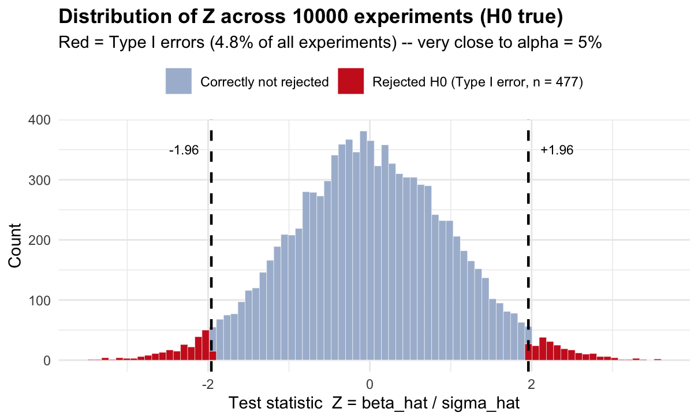
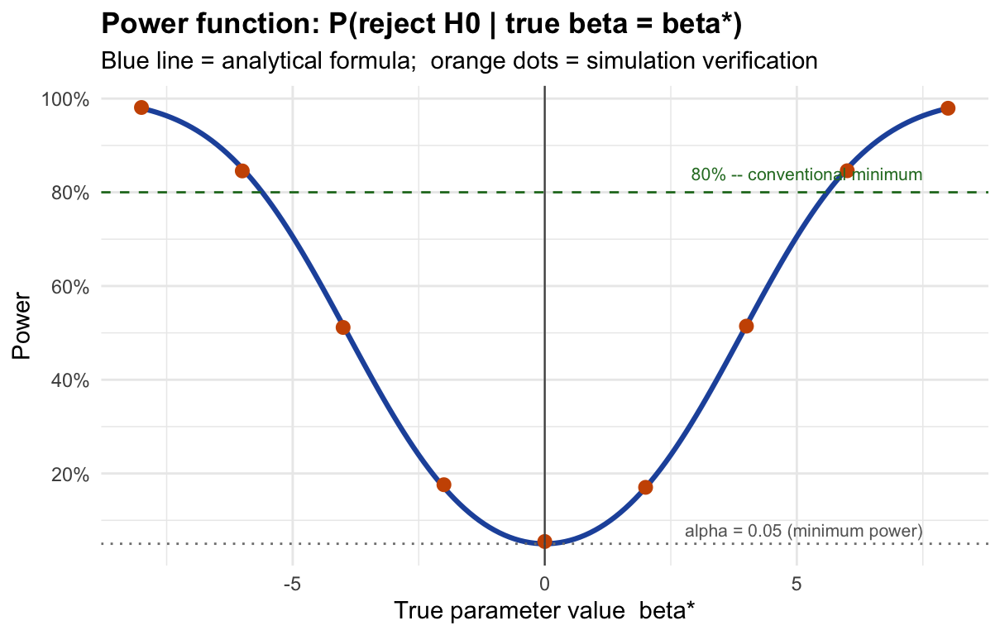
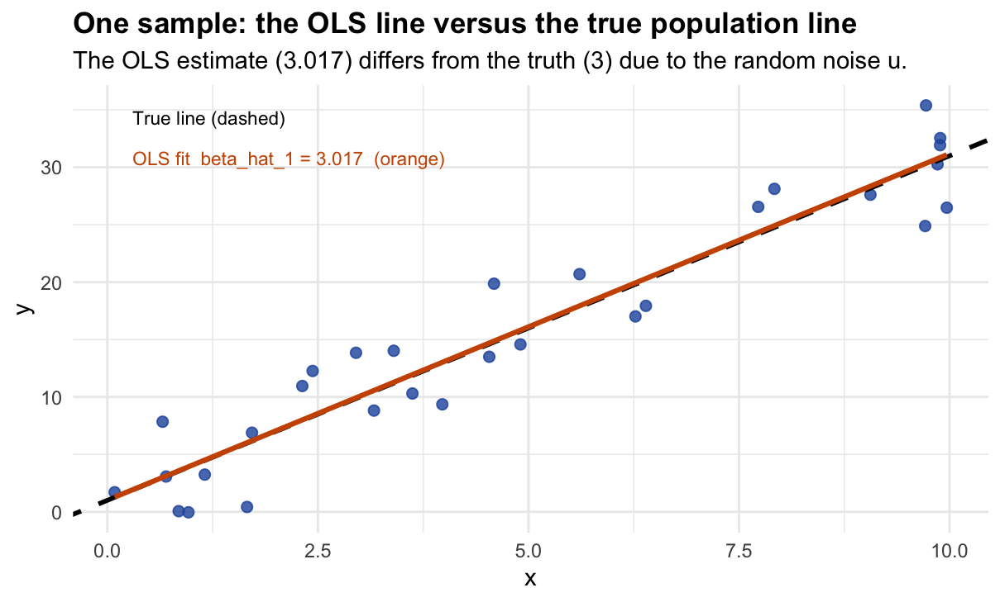
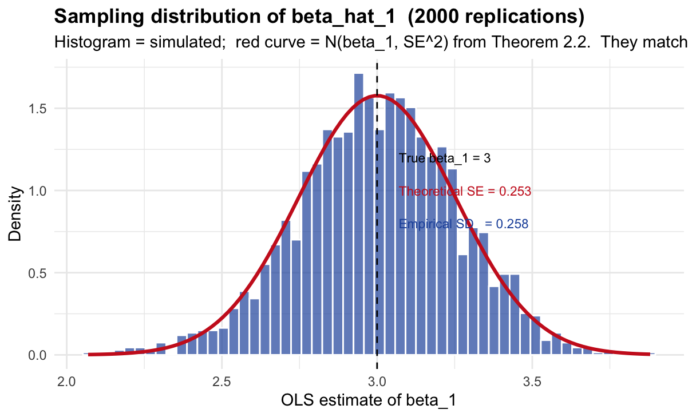
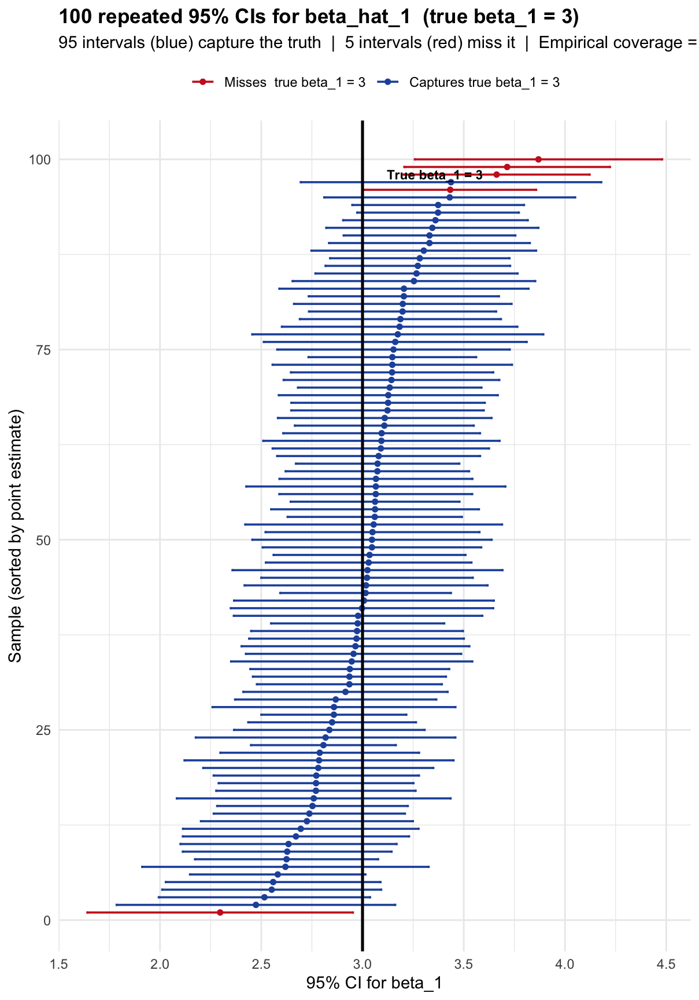
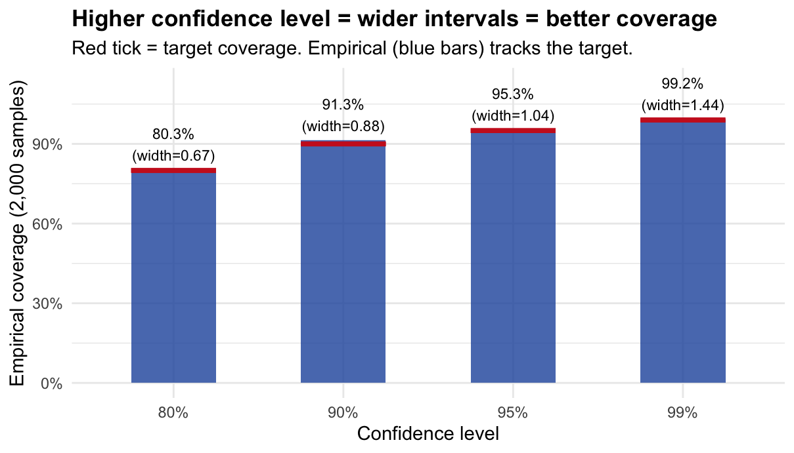

9 Tutorial 7: Type I & II Errors, Size, and Power
9.1 Part 1: Code Walkthrough — Simulation Guide
This section walks through every simulation step by step. Read it alongside the problem set below. Every simulation is built from scratch.
9.1.1 Two Essential R Functions: pnorm and qnorm
Before writing any simulation we need to be fluent with two functions. They are the backbone of everything that follows.
9.1.1.1 pnorm: the area to the left of a value
pnorm(x, mean, sd) answers: “what fraction of a normal distribution lies below the value x?”
# The standard normal N(0,1). How much area lies below 1.96?
pnorm(1.96, mean = 0, sd = 1)## [1] 0.9750021
# By symmetry, the area above 1.96 is:
1 - pnorm(1.96, mean = 0, sd = 1)## [1] 0.0249979
# The area in BOTH tails beyond +/- 1.96 (= alpha for a two-sided test):
(1 - pnorm(1.96)) + pnorm(-1.96)## [1] 0.04999579That last line gives us exactly 0.05. This is why 1.96 is the magic number for \(\alpha = 0.05\).
9.1.1.2 qnorm: the inverse — find the value that gives a target area
qnorm(p, mean, sd) answers: “what value x has exactly fraction p of the distribution below it?”
# What value cuts off 97.5% of N(0,1) to the left?
qnorm(0.975) # answer: 1.96 -- the two-sided critical value at alpha = 0.05## [1] 1.959964
# What value cuts off 95% (one-sided critical value)?
qnorm(0.95) # answer: 1.645## [1] 1.644854
# What value cuts off 99.5% (for alpha = 0.01, two-sided)?
qnorm(0.995) # answer: 2.576## [1] 2.575829\(\texttt{qnorm}\) and \(\texttt{pnorm}\) are inverses of each other:
\[\texttt{pnorm(qnorm(p))} = p \qquad \text{and} \qquad \texttt{qnorm(pnorm(x))} = x\]
The critical value \(z_{0.025} = 1.96\) is defined by the equation \(\Phi(1.96) = 0.975\). In R: qnorm(0.975) = 1.96. We will use this constantly.
## [1] 0.975## [1] 1.969.1.2 Simulating One Hypothesis Test from Scratch
Goal: understand exactly what happens in a single hypothesis test before we repeat it thousands of times.
Setting: test \(H_0\colon \beta = 0\) vs. \(H_1\colon \beta \ne 0\) at \(\alpha = 0.05\), with known \(\sigma_{\hat{\beta}} = 2\).
9.1.2.1 Step 1 — Define the world
# -- The TRUE state of the world (unknown to the researcher) --
beta_true <- 0 # H0 is TRUE: the real parameter is zero
sigma_hat <- 2 # the known standard deviation of beta_hat
# -- The researcher's decision rule --
alpha <- 0.05
z_crit <- qnorm(1 - alpha / 2) # = 1.96 for a two-sided test
cat("True beta: ", beta_true, "\n")## True beta: 0
cat("sigma_beta_hat: ", sigma_hat, "\n")## sigma_beta_hat: 2## Critical value: 1.96## We reject H0 when |Z| > 1.969.1.2.2 Step 2 — Observe one estimate
The researcher collects data and computes \(\hat{\beta}\). In our simulation, we represent this by drawing one value from \(N(\beta_{\text{true}},\, \sigma_{\hat{\beta}}^2)\).
set.seed(101) # fix seed so this specific draw is reproducible
# Draw one OLS estimate from the sampling distribution of beta_hat.
# Under our DGP, beta_hat ~ N(beta_true, sigma_hat^2).
# rnorm(n, mean, sd) draws n values from a normal distribution.
beta_hat_observed <- rnorm(1, mean = beta_true, sd = sigma_hat)
cat("The observed estimate is: beta_hat =", round(beta_hat_observed, 4), "\n")## The observed estimate is: beta_hat = -0.6521
cat("The true value is: beta =", beta_true, "\n")## The true value is: beta = 0## Difference (due to noise): -0.65219.1.2.3 Step 3 — Compute the test statistic
The test statistic standardises the estimate: it measures how many standard deviations \(\hat{\beta}\) sits away from the null value \(\beta_0 = 0\).
# Z = (beta_hat - beta_0) / sigma_hat
# Under H0 (beta_0 = 0): Z = beta_hat / sigma_hat
beta_0 <- 0 # the null hypothesis value
Z_observed <- (beta_hat_observed - beta_0) / sigma_hat
cat("Test statistic: Z = (", round(beta_hat_observed,3), "- 0) /", sigma_hat,
"=", round(Z_observed, 4), "\n")## Test statistic: Z = ( -0.652 - 0) / 2 = -0.326## Critical value: +/- 1.96## |Z| = 0.3269.1.2.4 Step 4 — Make a decision
# The rejection rule: reject H0 if |Z| > z_crit
reject_H0 <- abs(Z_observed) > z_crit
if (reject_H0) {
cat("DECISION: Reject H0 (|Z| =", round(abs(Z_observed),3),
"> z_crit =", round(z_crit,3), ")\n")
} else {
cat("DECISION: Fail to reject H0 (|Z| =", round(abs(Z_observed),3),
"<= z_crit =", round(z_crit,3), ")\n")
}## DECISION: Fail to reject H0 (|Z| = 0.326 <= z_crit = 1.96 )9.1.2.5 Step 5 — Label the outcome
Since we know the true \(\beta = 0\) (we set it in Step 1), we can classify this result.
# Two possibilities:
# - If we rejected H0 and H0 is TRUE -> Type I Error
# - If we did not reject H0 and H0 is TRUE -> Correct decision
if (reject_H0 & beta_true == 0) {
cat("OUTCOME: Type I Error (false positive).\n")
cat(" We rejected H0 even though beta = 0 is TRUE.\n")
} else if (!reject_H0 & beta_true == 0) {
cat("OUTCOME: Correct. We did not reject H0, and H0 is indeed TRUE.\n")
}## OUTCOME: Correct. We did not reject H0, and H0 is indeed TRUE.We simulated one experiment. The true \(\beta = 0\), so \(H_0\) is true. Whether we made a Type I error or not depends entirely on the random draw of \(\hat{\beta}\). In any one experiment, we cannot tell if we are right or wrong — we never observe the truth. The 5% guarantee is about what happens over many repetitions, which is exactly what we simulate next.
9.1.3 Repeating 10,000 Times: Verifying the Size
Goal: repeat the exact procedure from the previous section ten thousand times and count how often we (incorrectly) reject \(H_0\) when it is true. The answer should be approximately 5%.
9.1.3.1 Step 1 — Decide how many repetitions
n_sim <- 10000 # number of simulated experiments
beta_true <- 0 # H0 is TRUE in all 10,000 experiments
sigma_hat <- 2
z_crit <- qnorm(0.975) # = 1.96
cat("We will run", n_sim, "experiments.\n")## We will run 10000 experiments.
cat("In every experiment, the true beta =", beta_true, "(H0 is always TRUE).\n")## In every experiment, the true beta = 0 (H0 is always TRUE).## We reject whenever |Z| > 1.969.1.3.2 Step 2 — Draw 10,000 estimates in one line
Instead of using a loop, R lets us draw all 10,000 values at once with a single rnorm() call.
# rnorm(n_sim, ...) draws n_sim independent values simultaneously.
# Each value represents beta_hat from one hypothetical experiment.
beta_hat_all <- rnorm(n_sim, mean = beta_true, sd = sigma_hat)
# Inspect the first 10 estimates
cat("First 10 simulated estimates of beta_hat:\n")## First 10 simulated estimates of beta_hat:## [1] 1.105 -1.350 0.429 0.622 2.348 1.238 -0.225 1.834 -0.447 1.053
# Verify: the average should be close to the true beta = 0 (unbiasedness)
cat("Mean of 10,000 estimates:", round(mean(beta_hat_all), 4),
" (should be close to", beta_true, ")\n")## Mean of 10,000 estimates: 0.0103 (should be close to 0 )
cat("SD of 10,000 estimates: ", round(sd(beta_hat_all), 4),
" (should be close to sigma_hat =", sigma_hat, ")\n")## SD of 10,000 estimates: 1.9866 (should be close to sigma_hat = 2 )9.1.3.3 Step 3 — Compute all 10,000 test statistics
# Standardise each estimate: Z = beta_hat / sigma_hat
# This produces 10,000 Z-statistics, one per simulated experiment.
Z_all <- beta_hat_all / sigma_hat
cat("First 10 test statistics:\n")## First 10 test statistics:## [1] 0.552 -0.675 0.214 0.311 1.174 0.619 -0.113 0.917 -0.223 0.526
# Under H0, each Z should look like a draw from N(0,1).
# Check: mean should be ~0, SD should be ~1.
cat("\nMean of Z statistics:", round(mean(Z_all), 4), " (expected: 0)\n")##
## Mean of Z statistics: 0.0052 (expected: 0)## SD of Z statistics: 0.9933 (expected: 1)9.1.3.4 Step 4 — Apply the rejection rule to all experiments
# This produces a logical (TRUE/FALSE) vector of length 10,000.
# TRUE = we rejected H0 in that experiment.
# FALSE = we did not reject H0 in that experiment.
rejected_all <- abs(Z_all) > z_crit
# How many rejections in total?
cat("Total rejections (out of", n_sim, "):", sum(rejected_all), "\n")## Total rejections (out of 10000 ): 477
# The proportion of rejections = empirical Type I error rate.
# mean() on a TRUE/FALSE vector returns the fraction of TRUEs.
empirical_size <- mean(rejected_all)
cat("Empirical Type I error rate:", round(empirical_size, 4),
" -- target: alpha =", alpha, "\n")## Empirical Type I error rate: 0.0477 -- target: alpha = 0.059.1.3.5 Step 5 — Visualise the distribution of Z statistics
df_size <- data.frame(Z = Z_all, rejected = rejected_all)
ggplot(df_size, aes(x = Z, fill = rejected)) +
geom_histogram(bins = 80, color = "white", linewidth = 0.1) +
scale_fill_manual(
values = c("TRUE" = "#cc2222", "FALSE" = "#aabbd4"),
labels = c("TRUE" = paste0("Rejected H0 (Type I error, n = ", sum(rejected_all), ")"),
"FALSE" = "Correctly not rejected"),
name = NULL) +
geom_vline(xintercept = c(-z_crit, z_crit), linetype = "dashed", linewidth = 0.8) +
annotate("text", x = z_crit + 0.15, y = 350, label = "+1.96", hjust = 0, size = 3) +
annotate("text", x = -z_crit - 0.15, y = 350, label = "-1.96", hjust = 1, size = 3) +
labs(
title = paste0("Distribution of Z across ", n_sim, " experiments (H0 true)"),
subtitle = paste0("Red = Type I errors (", round(empirical_size*100,1),
"% of all experiments) -- very close to alpha = 5%"),
x = "Test statistic Z = beta_hat / sigma_hat",
y = "Count"
) +
theme_minimal(base_size = 11) +
theme(legend.position = "top", plot.title = element_text(face = "bold"))
Under \(H_0\), the test statistics follow \(N(0,1)\) — the histogram should look like a bell curve centred at zero. The dashed lines at \(\pm 1.96\) define the rejection region. The red bars (roughly 5% of all bars) are the Type I errors: experiments where \(|Z| > 1.96\) purely by chance, even though the truth is \(\beta = 0\).
The critical value 1.96 was engineered so that exactly 5% of \(N(0,1)\) falls in the tails. This simulation confirms it empirically.
9.1.4 The Power Function: What Happens When H0 is False?
Goal: understand how the probability of correctly rejecting \(H_0\) (= power) depends on the true effect size \(\beta^*\).
9.1.4.1 Step 1 — What changes when H0 is false?
When the true \(\beta = \beta^*\) (not zero), the estimate \(\hat{\beta}\) is no longer centred at zero — it is centred at \(\beta^*\). The test statistic therefore follows \(N(\delta, 1)\) instead of \(N(0,1)\), where \(\delta = \beta^*/\sigma_{\hat{\beta}}\) is the signal-to-noise ratio.
sigma_hat <- 2
z_crit <- qnorm(0.975)
# When beta* = 6: the test statistic Z = beta_hat / 2 ~ N(6/2, 1) = N(3, 1)
beta_star <- 6
delta <- beta_star / sigma_hat # signal-to-noise ratio
cat("True effect: beta* =", beta_star, "\n")## True effect: beta* = 6
cat("Signal-to-noise: delta = beta*/sigma_hat =", delta, "\n")## Signal-to-noise: delta = beta*/sigma_hat = 3
cat("Distribution of Z: N(delta, 1) = N(", delta, ", 1)\n")## Distribution of Z: N(delta, 1) = N( 3 , 1)
cat("Distribution under H0: N(0, 1)\n")## Distribution under H0: N(0, 1)
cat("The distribution has shifted RIGHT by", delta, "units.\n")## The distribution has shifted RIGHT by 3 units.9.1.4.2 Step 2 — Compute power for beta* = 6 analytically
Power = \(P(|Z| > 1.96)\) when \(Z \sim N(\delta, 1)\). We split into two tails.
# RIGHT tail: P(Z > 1.96) when Z ~ N(delta, 1)
# Standardise: let W = Z - delta ~ N(0,1), then Z > 1.96 <=> W > 1.96 - delta
right_tail <- 1 - pnorm(z_crit - delta) # = P(W > z_crit - delta)
# LEFT tail: P(Z < -1.96) when Z ~ N(delta, 1)
# Z < -1.96 <=> W < -1.96 - delta
left_tail <- pnorm(-z_crit - delta) # = P(W < -z_crit - delta)
power_beta6 <- right_tail + left_tail
cat("Right tail contribution: P(Z > 1.96) =", round(right_tail, 4), "\n")## Right tail contribution: P(Z > 1.96) = 0.8508## Left tail contribution: P(Z < -1.96) = 0## Power at beta* = 6: 0.8508 -- i.e. 85.1 %9.1.4.3 Step 3 — Verify with simulation
set.seed(42)
n_sim_power <- 10000
# Simulate 10,000 experiments where the TRUE beta = 6 (H0 is FALSE)
beta_hat_h1 <- rnorm(n_sim_power, mean = beta_star, sd = sigma_hat)
Z_h1 <- beta_hat_h1 / sigma_hat # test statistic (computed as if H0 were true)
rejected_h1 <- abs(Z_h1) > z_crit # apply the decision rule
simulated_power <- mean(rejected_h1) # fraction of correct rejections = power
cat("Analytical power at beta* =", beta_star, ":", round(power_beta6, 4), "\n")## Analytical power at beta* = 6 : 0.8508## Simulated power at beta* = 6 : 0.8445
cat("They agree: the formula is correct.\n")## They agree: the formula is correct.9.1.4.4 Step 4 — Compute power for every possible true value
Now we repeat Steps 2–3 for a grid of values \(\beta^* \in [-8, 8]\) to draw the full power curve.
# Grid of candidate true values
beta_grid <- seq(-8, 8, by = 0.1)
# For each value on the grid, compute delta and then power analytically
delta_grid <- beta_grid / sigma_hat
power_curve <- pnorm(-z_crit - delta_grid) + (1 - pnorm(z_crit - delta_grid))
# Simulation check at a coarser grid (5,000 draws per point)
beta_check <- seq(-8, 8, by = 2)
power_check <- sapply(beta_check, function(b) {
Z_check <- rnorm(5000, mean = b, sd = sigma_hat) / sigma_hat
mean(abs(Z_check) > z_crit)
})
# Plot
df_curve <- data.frame(beta = beta_grid, power = power_curve)
df_check <- data.frame(beta = beta_check, power = power_check)
ggplot() +
geom_line(data = df_curve, aes(x = beta, y = power),
color = "#2255aa", linewidth = 1.1) +
geom_point(data = df_check, aes(x = beta, y = power),
color = "#cc5500", size = 2.5) +
geom_hline(yintercept = 0.05, linetype = "dotted", color = "grey50") +
geom_hline(yintercept = 0.80, linetype = "dashed", color = "#2a7a2a") +
geom_vline(xintercept = 0, color = "grey30", linewidth = 0.4) +
annotate("text", x = 7.5, y = 0.08, label = "alpha = 0.05 (minimum power)",
size = 2.8, hjust = 1, color = "grey40") +
annotate("text", x = 7.5, y = 0.84, label = "80% -- conventional minimum",
size = 2.8, hjust = 1, color = "#2a7a2a") +
scale_y_continuous(labels = scales::percent, breaks = seq(0, 1, 0.2)) +
labs(title = "Power function: P(reject H0 | true beta = beta*)",
subtitle = "Blue line = analytical formula; orange dots = simulation verification",
x = "True parameter value beta*", y = "Power") +
theme_minimal(base_size = 11) +
theme(plot.title = element_text(face = "bold"))
9.1.4.5 Step 5 — How does sample size move the curve?
# The SE formula from Wooldridge Theorem 2.2:
# SE(beta_hat) = sigma / sqrt(SST_x)
#
# For x ~ Uniform(0, 10):
# E[SST_x] = n * Var(x) = n * 10^2/12
# => SE = sigma_u / sqrt(n * 100/12)
#
# Larger n => smaller SE => larger delta = beta*/SE => higher power
sigma_u <- 4 # error standard deviation
x_range <- 10 # x ~ Uniform(0, x_range)
# For each sample size, recompute the power curve with the appropriate SE
n_values <- c(20, 50, 200)
power_by_n <- do.call(rbind, lapply(n_values, function(n) {
se_n <- sigma_u / sqrt(n * x_range^2 / 12) # SE for this n
delta_n <- beta_grid / se_n
power_n <- pnorm(-z_crit - delta_n) + (1 - pnorm(z_crit - delta_n))
cat("n =", sprintf("%3d", n),
" SE(beta_hat) =", round(se_n, 3),
" Power at beta*=2:", round(power_n[beta_grid == 2], 3), "\n")
data.frame(beta = beta_grid, power = power_n, n = as.character(n))
}))## n = 20 SE(beta_hat) = 0.31 Power at beta*=2: 1
## n = 50 SE(beta_hat) = 0.196 Power at beta*=2: 1
## n = 200 SE(beta_hat) = 0.098 Power at beta*=2: 1
ggplot(power_by_n, aes(x = beta, y = power, color = n)) +
geom_line(linewidth = 1.1) +
geom_hline(yintercept = 0.80, linetype = "dashed", color = "grey50") +
scale_color_manual(values = c("20"="#cc5500","50"="#2255aa","200"="#2a7a2a"),
name = "n") +
scale_y_continuous(labels = scales::percent, breaks = seq(0, 1, 0.2)) +
labs(title = "Larger samples shift the entire power curve up",
subtitle = "Same DGP, same alpha, different n -- only SE changes",
x = "True beta*", y = "Power") +
theme_minimal(base_size = 11) +
theme(plot.title = element_text(face = "bold"), legend.position = "top")
9.1.5 The OLS Estimator: Building Sampling Intuition
Goal: show concretely that \(\hat{\beta}_1^{\text{OLS}}\) is a random variable whose distribution we can characterise.
9.1.5.1 Step 1 — Define the data-generating process (DGP)
# These are population-level parameters -- the researcher NEVER observes them.
beta0_true <- 1 # true intercept
beta1_true <- 3 # true slope (this is what we want to estimate)
sigma_u <- 4 # standard deviation of the error term u
n_obs <- 30 # observations per sample
cat("DGP: y_i = ", beta0_true, "+ ", beta1_true, "* x_i + u_i\n")## DGP: y_i = 1 + 3 * x_i + u_i
cat(" u_i ~ N(0,", sigma_u^2, ")\n")## u_i ~ N(0, 16 )
cat(" x_i ~ Uniform(0, 10)\n")## x_i ~ Uniform(0, 10)
cat(" n =", n_obs, "observations per sample\n")## n = 30 observations per sample9.1.5.2 Step 2 — Draw one sample and inspect it
set.seed(7)
# Draw x from Uniform(0, 10) -- satisfies SLR.2 and SLR.3
x_sample <- runif(n_obs, min = 0, max = 10)
# Generate the error term: u ~ N(0, sigma_u^2)
u_sample <- rnorm(n_obs, mean = 0, sd = sigma_u)
# Apply the DGP to get y
y_sample <- beta0_true + beta1_true * x_sample + u_sample
# Look at the first 5 observations
df_sample <- data.frame(x = x_sample, u = u_sample, y = y_sample)
cat("First 5 observations:\n")## First 5 observations:## x u y
## 1 9.889 1.871 32.538
## 2 3.977 -3.575 9.357
## 3 1.157 -1.229 3.242
## 4 0.697 -0.019 3.073
## 5 2.437 3.953 12.265
cat("\nNote: y = 1 + 3*x + u. For observation 1:\n")##
## Note: y = 1 + 3*x + u. For observation 1:
cat(" y =", round(y_sample[1],3), "=",
beta0_true, "+", beta1_true, "*", round(x_sample[1],3),
"+", round(u_sample[1],3), "\n")## y = 32.538 = 1 + 3 * 9.889 + 1.8719.1.5.3 Step 3 — Fit OLS and read off the estimate
# lm(y ~ x) minimises sum of (y_i - b0 - b1*x_i)^2 over b0 and b1.
# It returns the OLS estimates beta_hat_0 and beta_hat_1.
model <- lm(y_sample ~ x_sample)
beta0_hat <- coef(model)[1] # estimated intercept
beta1_hat <- coef(model)[2] # estimated slope
cat("OLS results from this one sample:\n")## OLS results from this one sample:## beta_hat_0 (intercept) = 1.017 [true value: 1 ]## beta_hat_1 (slope) = 3.017 [true value: 3 ]## Estimation error: 0.017
ggplot(df_sample, aes(x = x, y = y)) +
geom_point(color = "#2255aa", size = 2, alpha = 0.8) +
geom_abline(slope = beta1_true, intercept = beta0_true,
color = "black", linewidth = 1, linetype = "dashed") +
geom_smooth(method = "lm", se = FALSE, color = "#cc5500", linewidth = 1.1) +
annotate("text", x = 0.3, y = max(y_sample) * 0.97,
label = "True line (dashed)", hjust = 0, size = 3) +
annotate("text", x = 0.3, y = max(y_sample) * 0.87,
label = paste0("OLS fit beta_hat_1 = ", round(beta1_hat, 3), " (orange)"),
hjust = 0, size = 3, color = "#cc5500") +
labs(title = "One sample: the OLS line versus the true population line",
subtitle = paste0("The OLS estimate (", round(beta1_hat,3),
") differs from the truth (", beta1_true,
") due to the random noise u."),
x = "x", y = "y") +
theme_minimal(base_size = 11) +
theme(plot.title = element_text(face = "bold"))
9.1.5.4 Step 4 — Repeat 40 times: the spaghetti plot
set.seed(42)
n_lines <- 40
# For each of 40 independent samples, run Steps 2-3 and save the coefficients.
# We only need the coefficients (b0, b1) -- not the raw data -- to draw the line.
all_coefs <- do.call(rbind, lapply(seq_len(n_lines), function(i) {
x <- runif(n_obs, 0, 10)
y <- beta0_true + beta1_true * x + rnorm(n_obs, 0, sigma_u)
m <- lm(y ~ x)
data.frame(sim = i, b0 = coef(m)[1], b1 = coef(m)["x"])
}))
cat("Summary of 40 OLS slope estimates:\n")## Summary of 40 OLS slope estimates:
cat(" Mean: ", round(mean(all_coefs$b1), 3),
" (should be close to true beta1 =", beta1_true, ")\n")## Mean: 2.957 (should be close to true beta1 = 3 )## Min: 2.542## Max: 3.73## Range: 1.188 -- this is sampling variability
# Build (x, y) prediction pairs for each of the 40 lines
x_grid <- seq(0, 10, length.out = 80)
df_lines <- do.call(rbind, lapply(seq_len(nrow(all_coefs)), function(i) {
data.frame(sim = i, x = x_grid,
y = all_coefs$b0[i] + all_coefs$b1[i] * x_grid)
}))
ggplot() +
geom_line(data = df_lines, aes(x = x, y = y, group = sim),
color = "#2255aa", alpha = 0.2, linewidth = 0.45) +
geom_abline(slope = beta1_true, intercept = beta0_true,
color = "#cc2222", linewidth = 1.5) +
annotate("text", x = 0.3, y = 32, color = "#cc2222", hjust = 0, size = 3,
fontface = "bold", label = "True population line (red)") +
annotate("text", x = 0.3, y = 29, color = "#2255aa", hjust = 0, size = 3,
label = paste0(n_lines, " OLS estimates (blue)")) +
coord_cartesian(ylim = c(-15, 40)) +
labs(title = "Each blue line is one OLS estimate from a different sample",
subtitle = paste0("The cloud of lines centres on the true line -- this is unbiasedness: ",
"E[beta_hat_1] = beta_1"),
x = "x", y = "y") +
theme_minimal(base_size = 11) +
theme(plot.title = element_text(face = "bold"))
9.1.5.5 Step 5 — Repeat 2,000 times: the sampling distribution
set.seed(1)
n_reps <- 2000
# Collect 2,000 slope estimates. replicate() runs the expression n_reps times
# and collects the result into a vector.
b1_all <- replicate(n_reps, {
x <- runif(n_obs, 0, 10)
y <- beta0_true + beta1_true * x + rnorm(n_obs, 0, sigma_u)
coef(lm(y ~ x))["x"] # return only the slope
})
cat("Results from", n_reps, "OLS estimates:\n")## Results from 2000 OLS estimates:## Mean: 3.0037 (should be 3 )## Standard deviation: 0.2576
# Theoretical SE from Wooldridge Theorem 2.2:
# SE(beta_hat_1) = sigma / sqrt(SST_x)
# For x ~ Uniform(0,10): Var(x) = 10^2/12, E[SST_x] = n * Var(x)
se_theoretical <- sigma_u / sqrt(n_obs * 10^2 / 12)
cat(" Theoretical SE: ", round(se_theoretical, 4),
" (from Theorem 2.2: sigma/sqrt(E[SST_x]))\n")## Theoretical SE: 0.253 (from Theorem 2.2: sigma/sqrt(E[SST_x]))## Agreement: 0.0046 difference
# Plot the empirical histogram and overlay the theoretical normal density
ggplot(data.frame(b1 = b1_all), aes(x = b1)) +
geom_histogram(aes(y = after_stat(density)), bins = 55,
fill = "#2255aa", alpha = 0.7, color = "white") +
# Theoretical density: N(beta1_true, se_theoretical^2)
stat_function(fun = dnorm,
args = list(mean = beta1_true, sd = se_theoretical),
color = "#cc2222", linewidth = 1.1) +
geom_vline(xintercept = beta1_true, linetype = "dashed") +
annotate("text", x = beta1_true + 0.07, y = 1.20,
label = paste0("True beta_1 = ", beta1_true), hjust = 0, size = 3) +
annotate("text", x = beta1_true + 0.07, y = 1.00,
label = paste0("Theoretical SE = ", round(se_theoretical, 3)),
hjust = 0, size = 3, color = "#cc2222") +
annotate("text", x = beta1_true + 0.07, y = 0.80,
label = paste0("Empirical SD = ", round(sd(b1_all), 3)),
hjust = 0, size = 3, color = "#2255aa") +
labs(title = paste0("Sampling distribution of beta_hat_1 (", n_reps, " replications)"),
subtitle = paste0("Histogram = simulated; red curve = N(beta_1, SE^2) from Theorem 2.2. ",
"They match -- the theory is correct."),
x = "OLS estimate of beta_1", y = "Density") +
theme_minimal(base_size = 11) +
theme(plot.title = element_text(face = "bold"))
9.1.6 Confidence Intervals: What Does 95% Actually Mean?
Goal: construct 100 OLS confidence intervals and show concretely that approximately 95% of them capture the true \(\beta_1 = 3\).
9.1.6.1 Step 1 — How does confint() build the interval?
# Fit OLS to one sample and inspect what confint() computes
set.seed(55)
x_ex <- runif(n_obs, 0, 10)
y_ex <- beta0_true + beta1_true * x_ex + rnorm(n_obs, 0, sigma_u)
m_ex <- lm(y_ex ~ x_ex)
# Extract ingredients manually
beta1_hat_ex <- coef(m_ex)["x_ex"]
se_hat_ex <- summary(m_ex)$coefficients["x_ex", "Std. Error"]
df_ex <- m_ex$df.residual # degrees of freedom = n - 2
t_crit_ex <- qt(0.975, df = df_ex) # t critical value (not z, because sigma unknown)
lower_manual <- beta1_hat_ex - t_crit_ex * se_hat_ex
upper_manual <- beta1_hat_ex + t_crit_ex * se_hat_ex
cat("Manual construction of the 95% CI:\n")## Manual construction of the 95% CI:## beta_hat_1 = 2.8612## SE(beta_hat_1) = 0.2616## t critical value (df = 28 ) = 2.0484## Margin of error = t * SE = 0.5359## CI = [ 2.3254 , 3.3971 ]
# Now compare with confint()
cf_auto <- confint(m_ex, "x_ex", level = 0.95)
cat("confint() result:\n")## confint() result:## CI = [ 2.3254 , 3.3971 ]
cat("They match -- confint() is doing exactly beta_hat +/- t * SE.\n")## They match -- confint() is doing exactly beta_hat +/- t * SE.9.1.6.2 Step 2 — Check if this specific CI captures the true value
# A CI [lower, upper] captures beta1_true if lower <= beta1_true <= upper.
captures_ex <- lower_manual <= beta1_true & beta1_true <= upper_manual
cat("True beta_1 =", beta1_true, "\n")## True beta_1 = 3## CI = [ 2.325 , 3.397 ]
cat("Does this CI capture the true value?", captures_ex, "\n")## Does this CI capture the true value? TRUE
if (captures_ex) {
cat("-> YES. The interval contains the truth.\n")
} else {
cat("-> NO. This is one of the ~5% that miss the truth.\n")
}## -> YES. The interval contains the truth.9.1.6.3 Step 3 — Repeat for 100 independent samples
set.seed(123)
n_ci <- 100 # number of CIs to construct
# For each of 100 samples: draw data, fit OLS, extract CI, check coverage.
ci_results <- lapply(seq_len(n_ci), function(i) {
x <- runif(n_obs, 0, 10)
y <- beta0_true + beta1_true * x + rnorm(n_obs, 0, sigma_u)
m <- lm(y ~ x)
cf <- confint(m, "x", level = 0.95)
data.frame(
sample = i,
est = coef(m)["x"], # point estimate
lower = cf[1],
upper = cf[2],
captures = cf[1] <= beta1_true & beta1_true <= cf[2]
)
})
df_ci <- do.call(rbind, ci_results)
# Summary
cat("Results across", n_ci, "samples:\n")## Results across 100 samples:## CIs that capture beta_1 = 3: 95## CIs that miss beta_1 = 3: 5## Empirical coverage rate: 95 %
cat(" Nominal coverage rate: 95%\n")## Nominal coverage rate: 95%9.1.6.4 Step 4 — Visualise all 100 intervals
# Sort by point estimate to make the plot readable
df_ci <- df_ci[order(df_ci$est), ]
df_ci$rank <- seq_len(nrow(df_ci))
ggplot(df_ci, aes(x = est, xmin = lower, xmax = upper, y = rank,
color = captures)) +
geom_errorbarh(height = 0.3, linewidth = 0.65) +
geom_point(size = 1.3) +
geom_vline(xintercept = beta1_true, linewidth = 0.9) +
scale_color_manual(
values = c("TRUE" = "#2255aa", "FALSE" = "#cc2222"),
labels = c("TRUE" = paste0("Captures true beta_1 = ", beta1_true),
"FALSE" = paste0("Misses true beta_1 = ", beta1_true)),
name = NULL) +
annotate("text", x = beta1_true + 0.12, y = 98,
label = paste0("True beta_1 = ", beta1_true),
hjust = 0, size = 3, fontface = "bold") +
labs(
title = paste0("100 repeated 95% CIs for beta_hat_1 (true beta_1 = ", beta1_true, ")"),
subtitle = paste0(sum(df_ci$captures), " intervals (blue) capture the truth | ",
sum(!df_ci$captures), " intervals (red) miss it | ",
"Empirical coverage = ", round(mean(df_ci$captures)*100,1), "%"),
x = "95% CI for beta_1",
y = "Sample (sorted by point estimate)"
) +
theme_minimal(base_size = 11) +
theme(plot.title = element_text(face = "bold"), legend.position = "top")
Each horizontal bar is one confidence interval from one sample. The vertical black line is the true \(\beta_1 = 3\). Blue bars cross the true line — they capture the truth. Red bars miss it entirely.
Notice that the intervals vary in both position (because \(\hat{\beta}_1\) varies across samples) and width (because \(\text{SE}(\hat{\beta}_1) = \hat{\sigma}/\sqrt{\text{SST}_x}\) also varies). About 5 out of 100 miss — consistent with 95% confidence.
The 95% is a property of the method (the factory), not of any single interval (the ring). Once a specific interval is computed, it either contains \(\beta_1\) or it does not. There is no probability left for that specific interval.
9.1.6.5 Step 5 — Confirm coverage across different confidence levels
set.seed(999)
conf_levels <- c(0.80, 0.90, 0.95, 0.99)
# For each confidence level, repeat 2,000 times and check coverage
coverage_table <- do.call(rbind, lapply(conf_levels, function(lev) {
# replicate() runs the expression 2,000 times and returns a vector
cvg <- replicate(2000, {
x <- runif(n_obs, 0, 10)
y <- beta0_true + beta1_true * x + rnorm(n_obs, 0, sigma_u)
cf <- confint(lm(y ~ x), "x", level = lev)
cf[1] <= beta1_true & beta1_true <= cf[2]
})
# Also record the average width of the CI at this level
wid <- replicate(500, {
x <- runif(n_obs, 0, 10)
y <- beta0_true + beta1_true * x + rnorm(n_obs, 0, sigma_u)
cf <- confint(lm(y ~ x), "x", level = lev)
cf[2] - cf[1]
})
data.frame(level = lev, label = paste0(lev*100, "%"),
coverage = mean(cvg), avg_width = mean(wid))
}))
# Print the table
cat("Nominal vs. Empirical Coverage:\n\n")## Nominal vs. Empirical Coverage:## Level Empirical coverage Avg CI width## ----------------------------------------------
for (i in seq_len(nrow(coverage_table))) {
cat(sprintf("%-12s %-18s %-14s\n",
coverage_table$label[i],
paste0(round(coverage_table$coverage[i]*100,1), "%"),
round(coverage_table$avg_width[i], 3)))
}## 80% 80.3% 0.673
## 90% 91.3% 0.882
## 95% 95.3% 1.038
## 99% 99.2% 1.444
# Plot
ggplot(coverage_table, aes(x = label, y = coverage)) +
geom_col(fill = "#2255aa", alpha = 0.8, width = 0.5) +
geom_errorbar(aes(ymin = level, ymax = level), color = "#cc2222",
linewidth = 1.3, width = 0.5) +
geom_text(aes(label = paste0(round(coverage*100,1), "%\n(width=",
round(avg_width,2), ")")),
vjust = -0.3, size = 3) +
scale_y_continuous(limits = c(0, 1.13), labels = scales::percent) +
labs(title = "Higher confidence level = wider intervals = better coverage",
subtitle = "Red tick = target coverage. Empirical (blue bars) tracks the target.",
x = "Confidence level", y = "Empirical coverage (2,000 samples)") +
theme_minimal(base_size = 11) +
theme(plot.title = element_text(face = "bold"))
9.1.7 Quick Reference: Every Function Used
# PROBABILITY FUNCTIONS
pnorm(x, mean, sd) # P(X <= x) for X ~ N(mean, sd^2)
qnorm(p, mean, sd) # value x such that P(X <= x) = p
dnorm(x, mean, sd) # density of N(mean, sd^2) at x
pt(x, df) # P(T <= x) for T ~ t_df
qt(p, df) # value x such that P(T <= x) = p
# RANDOM NUMBER GENERATION
set.seed(n) # fix the random seed for reproducibility
rnorm(n, mean, sd) # draw n values from N(mean, sd^2)
runif(n, min, max) # draw n values from Uniform(min, max)
replicate(n, expr) # run expr n times, collect results into a vector
# DATA MANIPULATION
do.call(rbind, list) # stack a list of data frames row-by-row
lapply(X, FUN) # apply FUN to each element of X, return a list
sapply(X, FUN) # same but try to simplify to a vector
# OLS
lm(y ~ x) # fit OLS: minimise sum of squared residuals
coef(model) # extract estimated coefficients (b0, b1, ...)
summary(model) # full output: SE, t-values, p-values, R^2
confint(model, "x", 0.95) # 95% CI for the coefficient on x
# uses: beta_hat +/- t_{alpha/2, n-2} * SE(beta_hat)
# VECTORS OF LOGICALS
abs(Z) > z_crit # TRUE where |Z| > 1.96 (rejection rule)
mean(logical_vector) # proportion of TRUEs = empirical probability
sum(logical_vector) # number of TRUEs1. Randomness lives in the data, not in the parameters. The true \(\beta_1 = 3\) is fixed. What changes across samples is \(\hat{\beta}_1\) and \(\text{SE}(\hat{\beta}_1)\) — so the confidence interval (built from these) is what is random, not \(\beta_1\).
2. Size is a calibration guarantee, not an accuracy guarantee. \(\alpha = 0.05\) means the testing procedure has a 5% false-alarm rate over many hypothetical experiments where \(H_0\) is true. It says nothing about whether \(H_0\) is true in your specific experiment.
3. Power depends on the signal-to-noise ratio \(\delta = |\beta^*|/\sigma_{\hat{\beta}}\). \(\delta\) grows when the true effect is large or when we have more/better data (smaller SE). Both routes lead to higher power. This is why large datasets are needed to detect small economic effects.
9.2 Part 2: Problem Set — Concepts and Exercises (50 min)
9.2.1 Block 1: Type I and Type II Errors (10 min)
Every hypothesis test makes one binary decision — Reject \(H_0\) or Fail to reject \(H_0\) — while the truth is in one of two states. This gives four possible outcomes:
| \(H_0\) is actually TRUE | \(H_0\) is actually FALSE | |
|---|---|---|
| Reject \(H_0\) | Type I Error (false positive) | Correct! (Power) |
| Fail to reject \(H_0\) | Correct! (true negative) | Type II Error (false negative) |
Type I Error (\(\alpha\)): We reject \(H_0\) when it is true. We see a pattern that is not there.
Type II Error (\(\beta\)): We fail to reject \(H_0\) when it is false. A real effect is present but we miss it.
The asymmetry: In most contexts the two errors are not equally costly. Criminal law (“beyond reasonable doubt”) prioritises minimising Type I — convicting an innocent person — even at the cost of more Type II errors. Medical screening may reverse this priority.
Quick Exercise. Fill in the table for the following context:
We test whether a job-training programme has an effect on wages. \(H_0\): the programme has no effect on wages.
| Type I Error | Type II Error | |
|---|---|---|
| What happens | ||
| In words | ||
| Real-world consequence |
Solution
\(H_0\): The programme has no effect (\(\beta_1 = 0\)).
Type I Error: We reject \(H_0\) and conclude the programme works — but it actually does not. We credit a useless programme and waste public resources.
Type II Error: We fail to reject \(H_0\) and conclude the programme is ineffective — but it actually works. A valuable policy is dismissed and workers miss the benefit.
Which is worse? Depends on the stakes. If the programme is cheap to run, Type II is worse (we lose real gains). If funding is scarce, Type I is worse (we fund an ineffective policy).The figure has two panels, one for each state of the world.
Left panel — \(H_0\) is true (programme has no effect, \(\beta_1 = 0\)). The bell curve shows all values of the test statistic \(Z = \hat{\beta}_1 / \sigma_{\hat{\beta}_1}\) we could observe across many repeated studies, when there truly is no effect. The curve is centred at zero. The dashed vertical lines at \(\pm 1.96\) are the critical values: we reject \(H_0\) whenever \(Z\) falls outside them.
- Red tails (Type I Error, 5%): these are the studies where we would reject \(H_0\) — even though it is true. The programme does nothing, but by bad luck our estimate lands far from zero. This happens 5% of the time. We cannot eliminate it; we chose \(\alpha = 0.05\) precisely to accept it.
- White centre (95%): the studies where we correctly do not reject \(H_0\).
Right panel — \(H_0\) is false (programme raises wages by \(\beta_1^* = 3\)). Now the true effect is non-zero, so the distribution of \(Z\) shifts to the right — it is no longer centred at zero but at \(\delta = \beta_1^* / \sigma_{\hat{\beta}_1} = 1.5\).
- Green area (Power): studies where \(Z\) exceeds the critical value and we correctly reject \(H_0\). The programme works, and we detect it.
- Grey area (Type II Error): studies where \(Z\) stays inside the critical values and we fail to detect the real effect. The distribution has shifted, but not enough for most draws to clear the bar.
Key intuition: the two panels share the same critical values (dashed lines). What changes is the centre of the bell curve. When the true effect is small, the right-panel curve barely moves — most of its mass stays inside the critical values, giving low power and high Type II error. A larger true effect shifts the curve further right, putting more mass beyond the threshold.

9.2.2 Block 2: Size (7 min)
\[\text{Size} = P(\text{reject } H_0 \mid H_0 \text{ is true}) = \alpha\]
The size of a test equals the Type I error probability. When we set \(\alpha = 0.05\) and use critical value \(z_{0.025} = 1.96\), we construct a procedure that — when \(H_0\) is true — rejects exactly 5% of the time in repeated sampling.
\[P(|Z| > 1.96 \mid H_0) = P(Z > 1.96) + P(Z < -1.96) = 0.025 + 0.025 = 0.05\]
What \(\alpha = 0.05\) means: if we ran the same experiment 1,000 times in a world where \(H_0\) is true, we would falsely reject \(H_0\) about 50 times — purely by random chance.
What \(\alpha\) does NOT mean: it is not the probability that \(H_0\) is true. It is a long-run frequency property of the procedure, not of any single conclusion.
9.2.3 Block 3: Power (8 min)
\[\text{Power}(\beta^*) = P(\text{reject } H_0 \mid \beta = \beta^*) = 1 - P(\text{Type II Error} \mid \beta = \beta^*)\]
Power is the probability of correctly rejecting \(H_0\) when the true parameter is \(\beta^*\).
What makes power high?
- Large true effect \(|\beta^*|\): the bigger the signal, the easier to detect.
- Small \(\sigma_{\hat{\beta}}\): more precision means larger signal-to-noise ratio.
- Larger \(\alpha\): a looser Type I threshold makes rejection easier — at a cost.
Analytical formula. When \(Z = \hat{\beta}/\sigma_{\hat{\beta}}\) and the true value is \(\beta^*\):
\[\text{Power}(\beta^*) = \Phi\!\left(\frac{|\beta^*|}{\sigma_{\hat{\beta}}} - z_{\alpha/2}\right) + \Phi\!\left(-\frac{|\beta^*|}{\sigma_{\hat{\beta}}} - z_{\alpha/2}\right) \approx \Phi\!\left(\delta - 1.96\right) \quad\text{for large }\delta\]
where \(\delta = |\beta^*|/\sigma_{\hat{\beta}}\) is the signal-to-noise ratio.
Key property: Power is a function of \(\beta^*\), not a single number. When \(\beta^* = 0\) (i.e., \(H_0\) is exactly true), Power \(= \alpha\). As \(|\beta^*|\) grows, Power increases toward 1.
The x-axis is the true effect \(\beta^*\) — a value we never observe in practice. The y-axis is the probability that our test detects it.
Read the curve like this: “If the true wage effect of the programme were \(\beta^*\) dollars/hour, how often would our test correctly reject \(H_0\)?”
- At \(\beta^* = 0\): \(H_0\) is exactly true. Power \(= \alpha = 5\%\). We reject only by chance — this is the Type I error floor. The curve never goes below this line.
- At \(\beta^* = 3\): The programme raises wages by $3/hour. Power \(\approx 32\%\). We catch the effect only 1 in 3 times — low power because 3 is only 1.5 standard errors from zero.
- At \(\beta^* = 6\): Power \(\approx 85\%\). The effect is now 3 standard errors from zero — large enough to detect reliably.
- The curve is symmetric: a negative effect of \(-3\) is just as hard (or easy) to detect as \(+3\).
- The 80% dashed line is a conventional benchmark for “adequate power” used in study design.
Why does the curve rise as \(|\beta^*|\) grows? Because a larger true effect shifts the distribution of \(Z\) further from zero (larger \(\delta = |\beta^*|/\sigma_{\hat\beta}\)), placing more probability mass beyond the critical values \(\pm 1.96\). In the error-types diagram above, this is equivalent to moving the right-panel bell curve further to the right.

9.2.4 Exercise: A Complete Example (25 min)
A researcher wants to know whether a job-training programme raises hourly wages. She estimates the effect with OLS and obtains \(\hat{\beta}_1\) (dollars/hour). Under SLR.1–SLR.6 the estimator is normally distributed:
\[\hat{\beta}_1 \sim N\!\bigl(\beta_1,\; \sigma_{\hat{\beta}_1}^2\bigr) \qquad \text{with known } \sigma_{\hat{\beta}_1} = 2 \text{ \$/hour.}\]
She tests \(H_0\colon \beta_1 = 0\) (no effect) against \(H_1\colon \beta_1 \neq 0\) at \(\alpha = 0.05\).
The test statistic is \(Z = \hat{\beta}_1\,/\,2\), which follows \(N(0,1)\) under \(H_0\).
9.2.4.1 Part A — Theoretical Calculations
(a) Decision rule and critical values. Derive the values of \(\hat{\beta}_1\) that lead to rejection of \(H_0\).
Solution
Under \(H_0\), the test statistic \(Z = \hat{\beta}_1 / \sigma_{\hat{\beta}_1}\) follows a standard normal distribution:
\[Z = \frac{\hat{\beta}_1}{2} \sim N(0,1) \quad \text{when } \beta_1 = 0.\]
We reject \(H_0\) at \(\alpha = 0.05\) whenever \(Z\) falls in the rejection region:
\[|Z| > z_{\alpha/2} = z_{0.025} = 1.96\]
Translating back to \(\hat{\beta}_1\):
\[\left|\frac{\hat{\beta}_1}{2}\right| > 1.96 \;\iff\; |\hat{\beta}_1| > 1.96 \times 2 = 3.92 \text{ \$/hour}\]
Decision rule: reject \(H_0\) if \(\hat{\beta}_1 > 3.92\) or \(\hat{\beta}_1 < -3.92\).(b) Size and Type I error. What is the size of this test? Compute it explicitly and interpret in context.
Solution
The size is the probability of Type I error: rejecting \(H_0\) when it is true (\(\beta_1 = 0\)). Since \(Z \sim N(0,1)\) under \(H_0\):
\[\text{Size} = P(|Z| > 1.96 \mid \beta_1 = 0) = P(Z > 1.96) + P(Z < -1.96) = 0.025 + 0.025 = \mathbf{0.05}\]
In context: if the training programme truly has no effect on wages, and we ran this study 100 times with different random samples, we would wrongly conclude that it works in approximately 5 of those studies — purely due to random variation in the data. We tolerate this 5% false-positive rate by choice (\(\alpha = 0.05\)).(c) Power and Type II error. Suppose the programme actually raises wages by \(\beta_1^* = 3\) $/hour.
- Compute the power step by step.
- Compute the Type II error probability.
- Interpret both numbers in context.
Solution
(i) Power — step by step.
Step 1. When the truth is \(\beta_1^* = 3\), the OLS estimator has distribution:
\[\hat{\beta}_1 \sim N(3,\; 4) \quad \Rightarrow \quad Z = \frac{\hat{\beta}_1}{2} \sim N\!\left(\frac{3}{2},\; 1\right) = N(1.5,\;1)\]
The test statistic is no longer centred at zero — it is shifted right by \(\delta = \beta_1^*/\sigma_{\hat{\beta}_1} = 3/2 = 1.5\).
Step 2. Power is the probability of falling in the rejection region under this shifted distribution:
\[\text{Power}(\beta_1^* = 3) = P(Z > 1.96 \mid Z \sim N(1.5,1)) + P(Z < -1.96 \mid Z \sim N(1.5,1))\]
Step 3. Standardise each term. If \(Z \sim N(1.5, 1)\), then \(W = Z - 1.5 \sim N(0,1)\), so:
\[P(Z > 1.96) = P(W > 1.96 - 1.5) = P(W > 0.46) = 1 - \Phi(0.46) = 1 - 0.677 = 0.323\]
\[P(Z < -1.96) = P(W < -1.96 - 1.5) = P(W < -3.46) = \Phi(-3.46) \approx 0.0003\]
Step 4. Combine:
\[\text{Power}(3) = 0.323 + 0.0003 \approx \mathbf{0.323 = 32.3\%}\]
(ii) Type II error. The Type II error is the complement of power (in the column “\(H_0\) false”):
\[P(\text{Type II}) = 1 - \text{Power}(3) = 1 - 0.323 = \mathbf{0.677 = 67.7\%}\]
(iii) Interpretation. The programme raises wages by $3/hour, but our test detects this real effect only 32% of the time. In 68% of studies we would fail to reject \(H_0\) and wrongly conclude the programme is ineffective — a Type II error. The power is low because $3/hour is only 1.5 standard errors away from zero; the two hypotheses are hard to tell apart with this level of precision.(d) Summary table. Fill in all four cells with the probabilities for this specific example (\(\sigma_{\hat{\beta}_1} = 2\), \(\alpha = 0.05\), \(\beta_1^* = 3\)).
| \(H_0\) true (\(\beta_1 = 0\)) | \(H_0\) false (\(\beta_1^* = 3\)) | |
|---|---|---|
| Reject \(H_0\) | ||
| Fail to reject \(H_0\) |
Solution
| \(H_0\) true (\(\beta_1 = 0\)) | \(H_0\) false (\(\beta_1^* = 3\)) | |
|---|---|---|
| Reject \(H_0\) | Type I error \(= \alpha = 0.05\) | Power \(= 0.323\) |
| Fail to reject \(H_0\) | Correct \(= 1 - \alpha = 0.95\) | Type II error \(= 1 - 0.323 = 0.677\) |
(e) What if the true effect were larger? Compute power when \(\beta_1^* = 6\) $/hour, showing all steps. Explain why power is higher than in (c).
Solution
Step 1. New signal-to-noise ratio: \(\delta = 6/2 = 3\). The distribution of \(Z\) is now \(N(3, 1)\).
Step 2–3. Standardise:
\[P(Z > 1.96 \mid Z \sim N(3,1)) = P(W > 1.96 - 3) = P(W > -1.04) = \Phi(1.04) = 0.851\]
\[P(Z < -1.96 \mid Z \sim N(3,1)) = P(W < -1.96 - 3) = \Phi(-4.96) \approx 0\]
Step 4.
\[\text{Power}(6) = 0.851 + 0 \approx \mathbf{0.851 = 85.1\%}\]
Type II error \(= 1 - 0.851 = 14.9\%\).
Why is power higher? When \(\beta_1^* = 6\), the distribution of \(Z\) is centred at \(\delta = 3\) — three standard errors from zero. Most of its mass now lies to the right of the critical value \(1.96\), making rejection the most likely outcome. Compared to \(\beta_1^* = 3\) (where \(\delta = 1.5\)), the distribution has moved further from the threshold, and detection is much easier.9.2.4.2 Part B — Simulation
We verify the numbers from Part A by simulation using the same job-training context.
The idea: imagine running the wage study 10,000 times — drawing a new random sample of workers each time and computing \(\hat{\beta}_1\). We do this twice: once in a world where the programme has no effect (Scenario A: \(\beta_1 = 0\)) and once where it truly raises wages by $3/hour (Scenario B: \(\beta_1^* = 3\)).
In each simulated study we apply the same decision rule: reject \(H_0\) if \(|\hat{\beta}_1| > 3.92\).
- In Scenario A, the fraction of rejections estimates the size (should be \(\approx 0.05\)).
- In Scenario B, the fraction of rejections estimates the power (should be \(\approx 0.323\)).
- In Scenario B, the fraction of non-rejections estimates the Type II error (should be \(\approx 0.677\)).
set.seed(42)
sigma_hat <- 2 # SE of beta_hat (same as Part A)
z_crit <- qnorm(0.975) # 1.96 => reject when |beta_hat| > 1.96 * 2 = 3.92
n_sim <- 10000 # number of simulated studies
# ---------------------------------------------------------------
# Scenario A: H0 is TRUE -- programme has NO effect (beta_1 = 0)
# Each draw is one hypothetical study: a new sample of workers,
# a new OLS estimate. Here beta_hat ~ N(0, sigma_hat^2).
# ---------------------------------------------------------------
bhat_A <- rnorm(n_sim, mean = 0, sd = sigma_hat)
reject_A <- abs(bhat_A / sigma_hat) > z_crit # TRUE = wrongly rejected H0
cat("--- Scenario A: programme has NO effect (beta_1 = 0) ---\n")## --- Scenario A: programme has NO effect (beta_1 = 0) ---## Reject H0 (Type I error): 0.051 [theory: 0.050]## Do not reject (correct): 0.949 [theory: 0.950]
# ---------------------------------------------------------------
# Scenario B: H0 is FALSE -- true effect is beta_1* = 3 $/hour
# Now beta_hat ~ N(3, sigma_hat^2). The distribution has shifted.
# ---------------------------------------------------------------
bhat_B <- rnorm(n_sim, mean = 3, sd = sigma_hat)
reject_B <- abs(bhat_B / sigma_hat) > z_crit # TRUE = correctly rejected H0
cat("--- Scenario B: programme raises wages by $3/hour (beta_1* = 3) ---\n")## --- Scenario B: programme raises wages by $3/hour (beta_1* = 3) ---## Reject H0 (Power): 0.326 [theory: 0.323]## Do not reject (Type II): 0.674 [theory: 0.677]
Solution
Reading the results:
Scenario A — size \(\approx 0.05\): in 10,000 studies where the programme has no effect, we wrongly rejected \(H_0\) in about 5% of them. This is exactly the Type I error rate we chose (\(\alpha = 0.05\)). The result confirms that our critical value of \(\pm 1.96\) is correctly calibrated.
Scenario B — power \(\approx 0.323\): in 10,000 studies where the programme genuinely raises wages by $3/hour, we correctly detected the effect in only about 32% of them — matching the analytical calculation in Part A(c). This is low power: a real, meaningful wage gain goes undetected most of the time.
Scenario B — Type II error \(\approx 0.677\): in the remaining 68% of Scenario B studies, we failed to reject \(H_0\) even though the programme works. These are false negatives — studies that would lead a policy-maker to cancel a beneficial programme.
Connection to the figure: the two panels of the plot correspond exactly to the two scenarios. The left panel (Scenario A) shows the \(N(0,1)\) distribution of \(Z\); the red tails are the 5% false-positive rate. The right panel (Scenario B) shows the shifted \(N(1.5,1)\) distribution; the green area is power and the grey area is the Type II error.